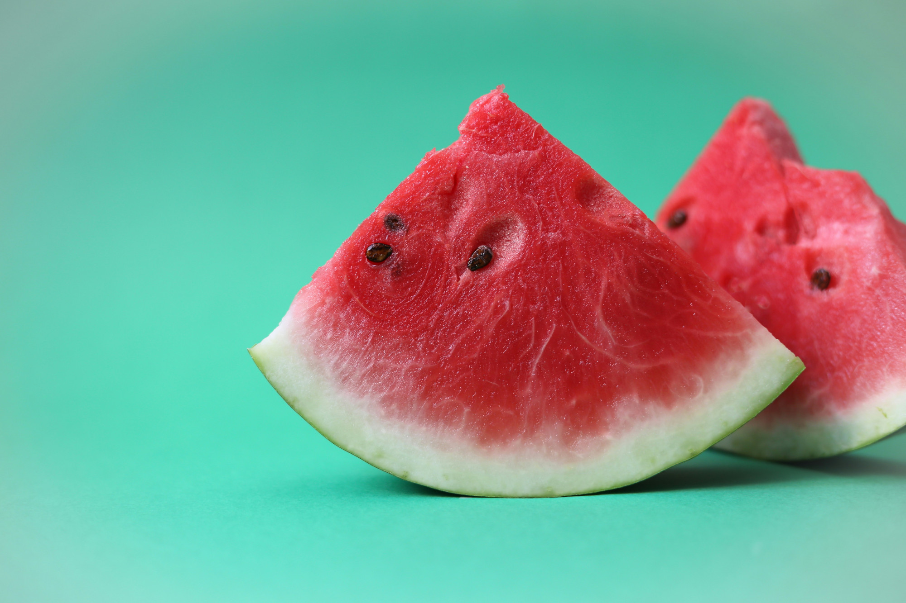

Hi! I'm Alex Carlseen. I'm originally from Houston, TX and now residing in
California's Bay Area. I've spent the last 20 years in hospitality/culinary
roles— from pizza shops to Chef's Table worthy kitchens.

Working in hospitality has provided great opportunities for me to learn valuable skills useful in any
environment. The career involves daily long hours full of activity. Environments are stressful, and
and communication is key for making plans around resources and solving problems
as as team.
Hobbies:
Obviously, I love cooking and dining out. I also enjoy playing some video games or spending time outdoors when the days are nice. Cycling up into the hills keeps me in good health!
Obviously, I love cooking and dining out. I also enjoy playing some video games or spending time outdoors when the days are nice. Cycling up into the hills keeps me in good health!